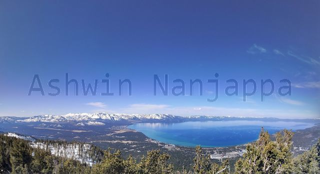
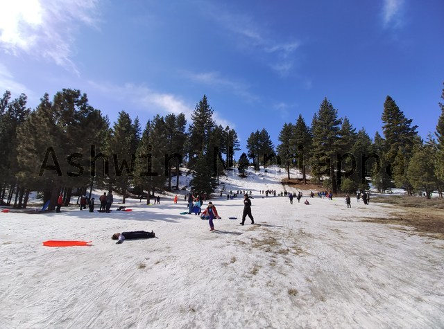
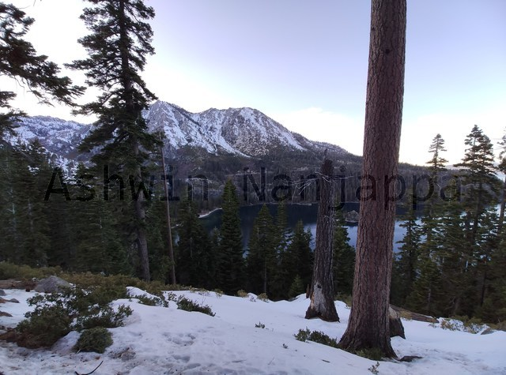

Our son said he wanted to see snow this winter and we decided to go and see Lake Tahoe. This is a gigantic ancient lake with clear water and is incredibly deep. It is surrounded on all sides by mountains where there is snow during most of the year. People seem to visit the ski resorts on these mountains to ski in winter and hike trails and enjoy the lake water in summer.
There are many towns around the lake and ski resorts, we decided to stay at the South Lake Tahoe town and visit the Heavenly ski resort that is nearby. South Lake Tahoe is about 4 hours drive from the Bay Area.
Drive
We drove from Santa Clara to South Lake Tahoe.
Google Maps showed two possible routes. We chose the route through 680-N, 80-E and 50-E (towards South Lake Tahoe).
With a toddler in the car, we decided to take two breaks at Fairfield and Folsom. This turned out to be a good decision, both are small towns with lots of gas stations (to refill the car) and lots of places for eating and coffee. For bathroom breaks, Starbucks and Chick-fil-a at these places had clean bathrooms.
With a kid, each break took more than an hour! I had not factored that this would take so much.
There is a $6 toll when you use 680-N. (No such toll in the other direction: 680-S.) They accept only cash, so be prepared.
The HW-50 drive is about an hour and is through the mountains. It will turn into single-lane in each direction with no solid divider in the middle. Also when heading East, you will be on the side away from the mountain side, so it can feel scary.
If you or your kid can get car sick due to curvy roads, be prepared for the HW-50 stretch. Our kid vomited in this stretch while driving in both directions. We had to carefully find a place to pull over, clean him up and change his clothes.
Snow chains: When it snows heavily, you will be required to put on tire chains on your car. You can check the conditions and restrictions for HW-50 by entering 50 in this website. When buying tire chains, make absolutely sure to pick the chains that are specified for your tire size. Also, make sure to try the chains before the trip. I found that they were incredibly hard to put on my tires and I had decided to pay someone to put them on and later take them off on HW-50. Thankfully, there was no snow on the roads and we did not need to try our tire chains.
Wear
Since this was the family’s first real winter vacation we had to figure out what to wear to keep warm outside and not get wet. This is what worked out for us:
Head: A beanie that can be pulled down to cover the ears.
Top: Three layers turned out to be sufficient: a thermal inner, sweater or warm top as middle layer and a down jacket as outer layer. We had chosen the warmest thermals from Uniqlo, called extreme heattech, that did the job.
Hands: Winter gloves are a must. Non-woolen if you plan to play in snow.
Bottom: Two layers was sufficient: a thermal inner and a warm pants as outer layer. Remember to buy snow pants if your kid plans to play in the snow – this is a must! For pants, I chose a heattech jeans that had a warm lining inside, kept my legs toasty.
Socks: Any socks will do, if your shoes are equipped for the snow.
Shoes: Buy snow boots, these extend several inches above ankle, are waterproof and have insulation to protect your feet against cold. Or buy general boots which have the same properties. The spouse and kid got snow boots and I got the Timberland 6-inch waterproof boots and our feet stayed dry and toasty in the snow.
Stay
We stayed at LakeLand Village in a lodge room with kitchen. It was a bit rundown, but quite nice otherwise. There was a Safeway grocery store nearby, so we could get groceries and cook food in our kitchen when required. The instant pot is apparently a good choice for such trips.
Our hotel had a on-demand van service to take us to the ski resort starting point and other places in town. This was useful to get to and from the place where the gondola starts.
The hotel had a private pier that goes right into the lake. Evening time spent here and on the adjoining beach was beautiful.
See and do
Gondola
View from observation deck
The gondola ride is expensive, but worth it for the views and experience.
If you have a choice, make sure to take this on a clear day so that you get great views of Lake Tahoe from the top.
Note that no sleds are allowed on the gondola, we had to leave our son’s sled at the bottom and pick it up after we returned down. (During winter, sleds for kids are easily available at the Safeway and CVS in town.)
Make sure to get down at the observation point while going up. On the way back the gondola will not stop here.
The observation point has fantastic views of the lake and the mountains ringing it.
The gondola drops you at the top near Tamarack Lodge.
There are ski lifts here for folks who ski to go further up.
Tubing can be down here for big kids and adults.
Food and drinks can be had at the lodge.
With a small kid, we just played in the snow, built snow man and watched the skiers.
Sledding
Kids having fun sledding
If you have a small kid, sledding is a must!
Note that sleds are not allowed on the gondola ride, so we had to find some other place for our kid to have fun.
We found a free public sledding area at the intersection of HW-50 (going North) and HW-28. You can find it listed on Google Maps as public sledding or Spooner Summit.
There is a tiny slope and hill with snow near where you park your car.
This place was full of kids sledding and our kid had a blast for several hours riding down on his sled!
Emerald Bay
Emerald Bay view from Inspiration Point
We drove to Inspiration Point which has a gorgeous view of Emerald Bay.
The drive is a bit scary, but the views are worth it.
This little trip to Lake Tahoe was quite enjoyable. Maybe next time we will learn to ski there!